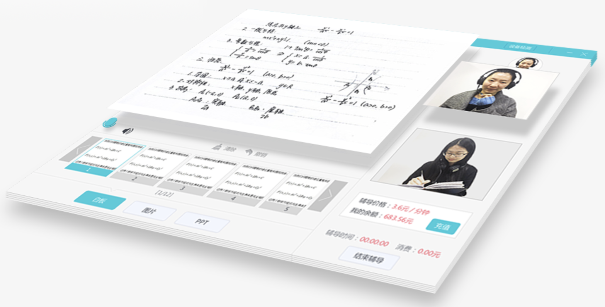
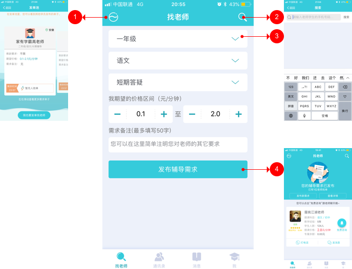
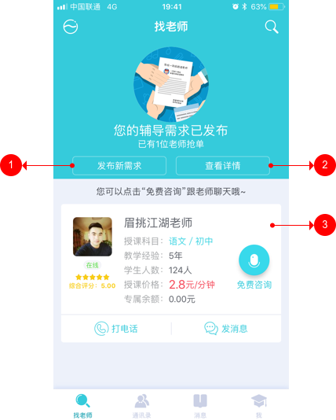
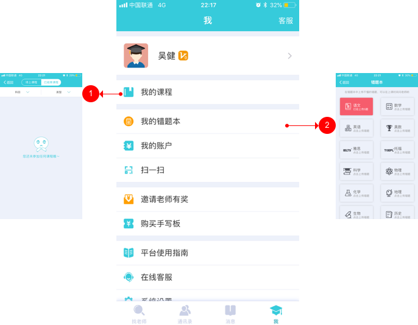
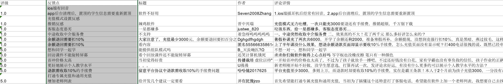

index
#8-产品分析报告
1 背景和目的
1.1 背景
随着互联网的发展，基于互联网的K12教育正在如火如荼地开展。家有学霸作为一款一对一在线辅导的C2C产品，依托其创新的抢单模式、卓越体验的互动技术、严格把控的师资力量、友好的互动社交，迅速在K12教育领域占有一席之地。家有学霸的模式被市场证明它已经取得了阶段性的成功。
1.2 目的
经过粗略地了解，发现家有学霸和目前市场上的产品有很多不同之处，值得去关注。本次通过对家有学霸（IOS端V3.35.0）进行深度体验，还原用户的需求和使用场景、产品的功能流程，以及关键页面交互，梳理用户反馈，发现目前产品的特色以及可能需要的改进点，最后提出产品的迭代方向。
2 家有学霸的产品定位
目前市场上的K12教育产品主要分为辅导类、家教类、题库累、答疑类、工具类五种，涵盖了学生学习过程中几乎所有的场景。产品的发展路径主要有两种，一是从单一的需求场景出发，在前期积累一定量的学生用户，然后拓展到多个场景，覆盖大多数学生学习的需求场景，实现转化和盈利；二是不断深耕单一需求场景，凸显技术优势和内容优势，提升用户体验，形成固定的用户规模。
家有学霸专注于一对一的在线辅导，走的是第二种路径。产品目标是全国领先的中小学名师一对一在线辅导C2C平台。主要服务两个群体，一是学生。让学生可以不受时间和空间的限制和来自全国的名师一起学习，降低学习成本，提升学习效果；二是教师。通过抢单模式，让老师可以在家或者一些安静的场所轻松指导学生，还可以带来一定的经济收益。通过满足学生和教师的需求，实现教师和学生的轻松对接和辅导。
同时，家有学霸还包含了社交的特色功能，方便同学和同学之间、同学和老师之间进行对话交流，相比较线下面对面课堂，线上缺乏亲密感，一定程度上满足学生和老师交流的情感需要，增加用户的粘性。
家有学霸slogan，“全国领先的中小学名师一对一在线辅导平台。”通过互联网，建立一个接近线下课堂体验的在线互联网课堂，实现教师和学生之间随时随地进行一对一的辅导，提升上课效率和保障学习效果。
3 家有学霸产品分析
3.1 用户需求分析
家有学霸是一款一对一在线辅导的C2C平台。主要的目标用户是老师和学生。同时，由于K12的学生没有自主选择的能力和经济独立的能力，所以我们需要在目标用户上还需要考虑到家长的存在。
以下是家有学霸的目标用户、场景、问题和解决方案的思维导图：

从产品需求整理中，我们提取出几个关键的用户需求和场景：
一是学生在做作业的时候，会遇到不懂得题目，需要得到及时地指导，父母是第一选择，但是父母因为工作比较忙无暇顾及孩子的学业，而传统的学生和教师的沟通方式很难得到及时地指导；
二是父母帮孩子找辅导班或者家教的时候，首先需要考虑的是老师是否靠谱，即对机构和老师的认可度；然后需要考虑的是价格，教育是一个长期的投资，对一般的家庭来讲具有一定的经济负担；
三是在校任教的教师除了上课时间和备课的时间，还有一些空余的时间，可以发挥自己的职业优势帮助更多的学生，同时获取一定的经济收益。自己开设辅导班，需要固定的时间和空间，并且是大块的完整时间，几乎限制了教师的自由；
这三个需求场景中存在的问题，通过互联网可以有效地解决。通过在线辅导，可以实现教师和学生随时随地地沟通和交流，父母不用再担心孩子来问问题的时候束手无策。通过互联网，可以接触到全国各地名师，不再受地域的限制，同时通过公开的方式，可以实现在合理的价格下自由选择老师。教师通过互联网，可以实现随时随地地教学， 充分利用零散的闲暇时间，不再受时间空间的限制，让教学更加便捷。
当然，我们也必须看到互联网的弊端，基于互联网的在线辅导依赖于技术和工具的补充，非面对面形式的辅导教师和学生之间缺乏亲密感，同时老师很难直观地观察到学生的学习状态等一些问题。
3.2 功能说明
基于上述的需求整理，家有学霸的功能主要围绕一对一辅导来展开设计，包含了找老师和互动社交两个功能。
下面简单对家有学霸进行功能描述：
找老师功能：学生或家长发布需求，包括年级、科目、辅导性质和期望价格区间，然后平台将需求发送给老师，等待老师来抢单，家长和学生可以查看抢单老师的个人简历和往期学生评价，挑选喜欢的老师。然后用户可以点击“课前咨询”免费和老师沟通，如果可以，就能直接跟老师约定辅导时间。最后，通过客户端进行上课辅导。
互动社交功能：互动社交功能，学生可以邀请老师和同学加入，可以查看系统推荐的优秀老师和同学，并添加好友，同时还可以建立群组，几个人在一起群组中讨论学习。并且提升消息的信息层级，方便用户及时查看并回复消息。这样的一个互动社交功能在应用场景上可以有更多的考量。
我们简单思考几个问题：
一是和课程销售模式相比，抢单模式有什么好处？在市场上做一对一在线辅导的产品有很多，以作业帮为例，作业帮的采用的是平台定价的课程销售模式，老师和学生之间无法进行便捷的双向选择。在抢单模式中，我们会发现，利用抢单模式，教师和学生之间有了更加自由的选择空间，通过相互选择初步建立信任的关系。同时价格是家长和学生需要考虑的一个因素，通过自主定价，可以提升用户尝试的心理，同时，老师也可以在价格上选择自己满意的用户，可以让老师增加老师的积极性。这种由老师和用户直接接触，并且遵照个人意愿的模式，容易让双方获得更多的主动权；
二是互动社交功能满足的需求和场景有哪些？我们可以简单地列举一些。首先，互动社交功能确实能够一定程度上满足学生在线上交流的情感需要，学生和学生之间、学生和老师之家可以实现随时随地地沟通和交流；然后，通过互动交流，可以增加用户的粘性，提高产品的日活，这是基于业务需求的考虑；其次，基于产品推广策略的设计。用户可以邀请老师和学生加入，通过社交传播，提高了产品的用户量；最后，通过群组，老师可以建立班级群，进行远程答疑辅导，实现随时随地解决问题的需要，这部分老师和学生可以实现部分转化；
其他功能说明：由于在体验过程中中无法体验到上课这一环节，所以无法具体展开来谈。通过产品介绍可以了解到家有学霸卓越体验的互动技术为产品积累了技术优势。家有学霸这么自述，“全新技术，让线上辅导效果比真人面对面辅导的效果更好！”主要包括多终端在线，可实现语音互动、视频互动、文字互动、多媒体互动以及师生书写互动，课堂笔记自动收录，支持课程回放。

3.3 产品信息架构

家有学霸标签栏包括“找老师、通讯录、消息和我”4个tab标签。
从产品的信息层级中也可以直观地看出家有学霸将找老师和社交功能作为主要的功能入口，而把我的课程放在了“我”的下一个层级。
我们来描述几个关键的使用场景，梳理用户体验路径。
一是想要申请一对一辅导的用户，当第一次打开APP的时候，想要用合理的价格找到喜欢、靠谱的老师，就能够快速找到；
二是已经申请完一对一辅导的用户，当遇到不懂的问题的时候，想要迅速联系老师及时指导，就能够联系到老师并且开始上课辅导；
三是在平台积累自己社交圈子的老用户，当遇到不懂的问题的时候，想要联系同学，就能够和同学进行即时聊天（考虑到微信和QQ的便捷性，场景需求不大）；
从用户使用场景的结论中，我们可以看到家有学霸突出了找老师和社交功能，弱化了上课的功能，延长了用户学习过程的用户体验路径；
3.4 核心业务流程
3.4.1 找老师流程

找老师功能是家有学霸的核心功能，也是家有学霸的创新模式。抢单模式开创了在线辅导新的C2C模式，我们来总结一下抢单模式主要包括三个阶段。
一是发布需求阶段，用户需要填写需求的相关信息，包括年级、学科、辅导性质、期望价格区间。在这里我们需要注意对于需求的相关信息不宜过多，保证涵盖最基本的信息，满足用户可以快速地发布需求的需求；
二是抢单阶段。系统设定时间期限，发送抢单给教师，教师查看需求信息，决定是否抢单，最终完成抢单；
三是查看抢单老师个人信息，和老师达成1对1辅导关系阶段。用户查看抢单老师的信息，如果不满意，重新发布需求，如果满意开始免费咨询，决定是否进行1对于1 的在线辅导。
3.4.2 注册流程

注册流程是产品的入口，决定了产品的注册转化率。采用采用了分步式注册流程，第一个页面用于手机号、验证码以及密码的输入，第二个页面用于完善个人信息，包括性别、姓名、省份。分步式的注册流程可能相比较一步式的注册流程，注册转化率会下降，需要进一步埋点进行数据分析得出结论。
关于个人信息的讨论。由于K12教育有一些基本的个人信息需要采集，如省份、年级、学科。
家有学霸将需求填写中的部分信息放到了注册流程中，让需求发布可以更加快捷，同时也可能造成注册转化率下降，具体情况有待进一步后台统计分析。
3.5 关键页面交互
3.5.1 找老师页面

找老师页面主要的功能是发布辅导需求。采用简洁的页面结构，避免无关信息的干扰。同时提供发单池和搜索两个功能。
发单池可以查看最近平台发布的需求，发单池一方面可以让用户观察到其他用户的行为，提升用户对平台的认可度；另一方面可以参考其他用户填写的需求信息，起到引导的作用。
搜索功能，可以通过搜索老师和学生的昵称、手机号码，找到自己熟悉的老师和学生，通过添加老师为好友。直接联系老师，完成1对1辅导，通过添加学生为好友，建立社交关系。
辅导基本信息包括年级、学科、辅导类型和期望价格区间。精简了信息内容，没有多余的信息，帮助快速发布需求。
3.5.2 查看抢单页面

查看抢单页面包括发单池、搜索、发布新需求、查看详情和抢单列表。发布新需求是用户重新发布需求，查看详情可以查看需求信息详情和取消需求。抢单列表呈现抢单老师的个人基本信息，用户可以点击进一步查看和了解教师个人页面，如果对该教师满意可以通过免费咨询、打电话、发消息等途径联系老师，进一步了解老师的基本情况、向老师介绍自己的基本学习情况以及确认辅导时间和内容。
需要说明，发布新需求功能。功能名称在该场景中比较有歧义。该场景是用户查看抢单老师个人信息，如果不满意，重新发布需求，如果满意开始免费咨询，决定是否进行1对于1 的在线辅导。发布新需求，意思是发布新的需求。功能名称和设计上没有体现是否会覆盖当前的需求，容易出现错误的操作。
3.5.3 “我”页面

“我”页面包括我的课程、我的错题本、我的账户、扫一扫、邀请老师有奖等功能。
其中我的课程，用户的使用场景是用户达成1对1辅导关系之后，进行学习的入口。从用户操作频率上来讲，属于高频操作；从产品功能上来讲，属于核心功能。由此可以看出家有学霸在一定程度上弱化了课程学习的信息层级，延长了学习的用户体验路径。
我的错题本满足用户在做错题目的时候，实现便捷地错题记录的需求，属于工具类功能。一定程度上可以增加用户的粘性。
4 迭代路径

家有学霸IOS端自2015年9月16日上线以来，到目前为止总计迭代46次，进行了3次比较大的改版。通过以上产品关键迭代路径，可以发现：
- 产品V3.0.0版上线发布辅导需求的功能，开始有了产品的雏形和明确的方向；
- 从迭代路径中可以看出，家有学霸注重上课师生交互的体验，不断地创新升级互动技术，增强用户上课体验，尽力还原上课的交互场景；
- 产品强调多终端的场景，包括手机端、iPad端和PC端，以及手机端和PC的协同场景；
- 产品的社交功能从V3.33.0版本开始强化，更名通讯录以及新增消息入口。
5 用户反馈
本调研从酷传网收集了近一年（2017年4月24日——2018年4月9日）iOS端676条用户评论数据。通过数据收集整理和观察，剔除好评数据、重复数据和无意义数据，保留12条数据。数据进行过滤处理分析结果如下：

通过查看用户反馈发现，整体上家有学霸获得了用户的大量好评。帮助解决了学生、家长和老师的很多需求和痛点。如学生不用每天奔波在去辅导班的路上；家长觉得冬天或者下雨天孩子不用在外面奔波，足不出户就可以获得指导；老师觉得既可以指导学生，又可以获得一定的经济收益。
同时我们也看到用户的一些反馈意见需要进一步评估。
- Bug。iOS 端插入耳机有回音，app后台清理后，置顶的学生信息需要重新置顶。
- 改进。一些用户普遍对充值模式比较反感，充值额度大，退款需要收10%的手续费。部分用户翻译客服态度不够友善。